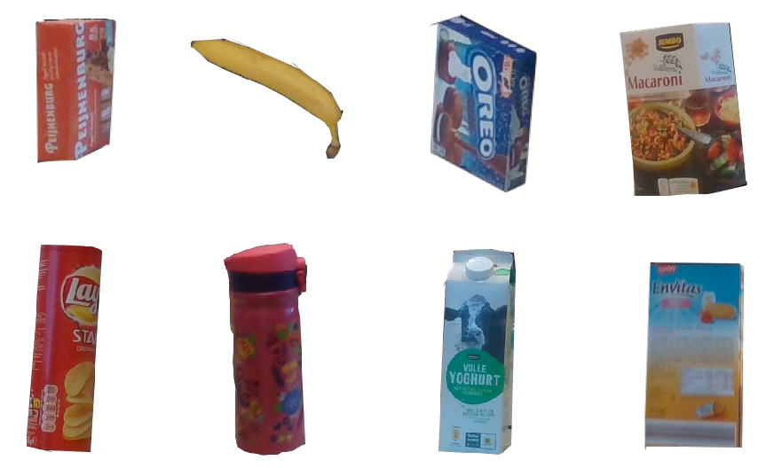

Motivation
6D object pose estimation is essential for applications such as robotics and augmented reality, where accurate spatial understanding of objects is required. However, most existing methods assume well-lit environments and suffer significant performance degradation under low-light conditions due to weak textures, increased noise, and unreliable depth observations. These challenges lead to unstable feature representations and inaccurate pose predictions. Therefore, developing robust pose estimation approaches that remain reliable under low-light conditions is crucial for real-world deployment.
Task
Task
In this benchmark, we propose a task of 6D pose estimate from RGB-D images in real time. We provide 3D datasets which contain RGB-D images, point clouds of eight objects and ground truth 6D poses. We hope that this will enable researchers to try out different methods.
Dataset
To provide participants with as accurate ground truth information as possible, we have created a physically accurate simulator （see Figure 1(a)） that is able to generate photot-realistic color-and-depth image pairs.
The dataset has eight rich and low textures objects. Each object has color-and-depth image pairs which have a resolution of 1280*720. The total number of images for each object is 500 (.png). Based on image-based rendering, we generate 400 photo-realistic synthesized color-and-depth image pairs for training and use the remaining 100 images for testing. The ground truth pose(from global to camera coordinates) is estimated by structure from motion(SFM). The Figure 1 shows eight objects of the dataset.
Download the datasetsRegistration
To participate in the track, please send us an email. In it, please confirm your interest in participation and if applicable, please also mention your affiliation and co-authors.
Submission
From participants, no later than the deadline mentioned in the schedule, we expect results submitted along with a one-page description of the method used to generate them. Results should be presented as a .txt file containing three parts: image names, their estimated 6D poses and estimation speed(ms) per pose.
Evaluation
We use two metrics for evaluation. Given the ground truth rotation R and translation T and estimated rotation R_e and translation T_e, the average distance(ADD) metric computes the mean distances between each 3D model points transformed by [R_e|T_e] and [R|T].
The average closest point distance (ADD-S) is an ambiguity-invariant pose error metric which takes care of both symmetric and non-symmetric objects into an overall evaluation.

Organizers
- Honglin Yuan 1
- Yuting Zhang 1
Contact us